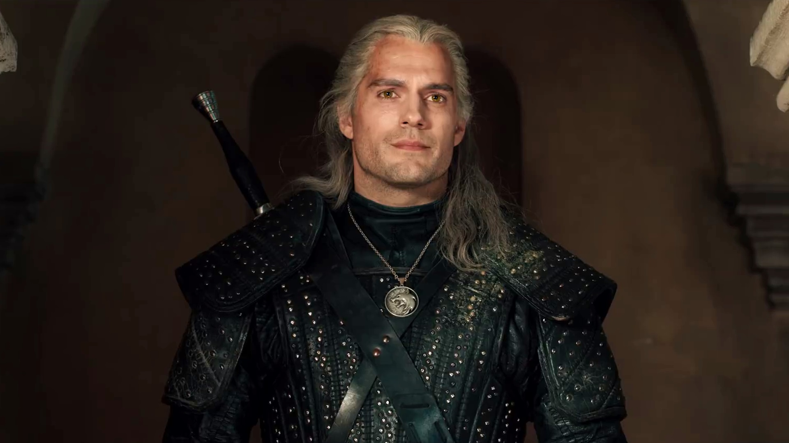

Regisztráció

A Vaják (eredeti cím: The Witcher) 2019-ben indult amerikai–lengyel fantasy-dráma televíziós sorozat, amelyet Lauren Schmidt Hissrich készített a Netflixnek és ami Andrzej Sapkowski Vaják című könyvsorozatán alapul.[8] A sorozat első, nyolc epizódból álló évada 2019. december 20-án vált elérhetővé a Netflixen. Megjelenését megelőzően a készítők bejelentették, hogy a sorozatból berendeltek egy újabb nyolc epizódos évadot. A második évadot 2021. december 17-én mutatták be.
Rövid történet
Egy fiktív középkori világban Ríviai Geralt, a magányos szörnyvadász, Vengerbergi Yennefer, a nagy hatalmú varázslónő és Ciri cintriai hercegnő rájönnek, hogy közös sorsuk által kapocs van közöttük.
© Minden jog fenntartva!